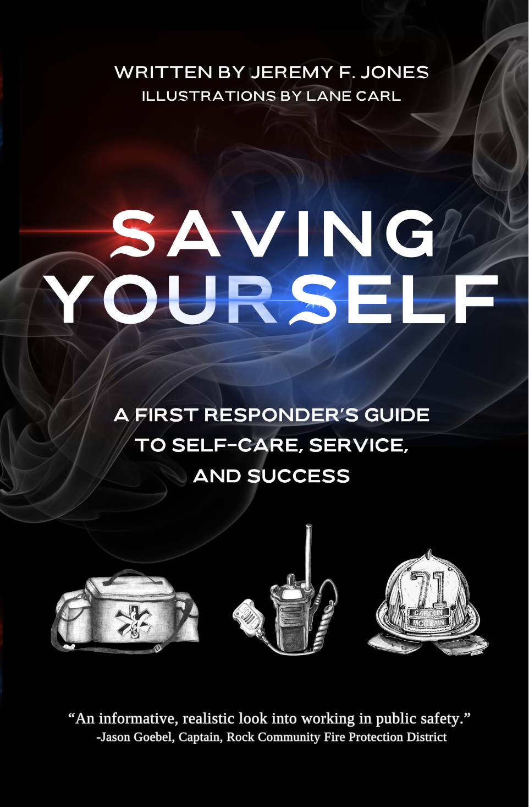

A First Responder's Guide to Self-Care, Service, and Success

An informative, realistic look into working in public safety.
Jason Goebel · Captain, Rock Community Fire Protection District
Your textbook will teach your students how to check a blood pressure, recognize shock, or put out a fire. What it can't teach them is how to take care of themselves — how to keep that inner passion for the job, how to recognize burnout before it takes hold, and what to do when it does. That's what this book is for.
Jeremy Jones started as a volunteer firefighter and spent 15 years in EMS and fire — urban and rural, Missouri to Kauai. He's been burnt out, made mistakes, run calls that stuck with him for years, and found his way back. He wrote this book to pass on what he learned.
It's written in a conversational tone with short chapters because he knows your students are tired of reading by the end of their program. It doesn't preach — it tells real stories, admits real mistakes, and gives practical advice that actually applies to the job.
Whether you use it as required reading, a course supplement, or a graduation gift, your students will be better prepared for the career ahead — not just the calls.
Jeremy brings to light a candid panorama of what it's like to work and live as a first responder — the lessons that you don't learn in class. He wants to give you the opportunity to learn from prior mistakes, whether he made them or witnessed them throughout his career, and offer direction to pave your way around obstacles.
Ian Breden, CCEMT-P · EMS Educator
See for yourself if Saving Yourself is right for your students. No obligation — just reply with your preferred format and Jeremy will get it to you.